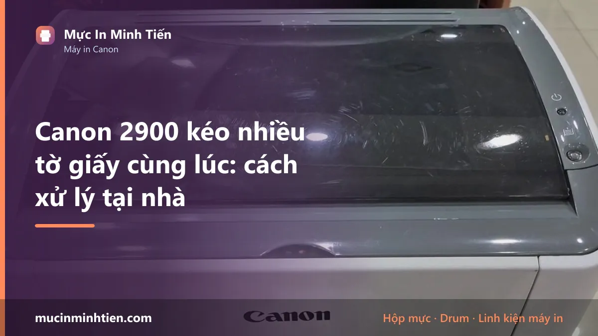
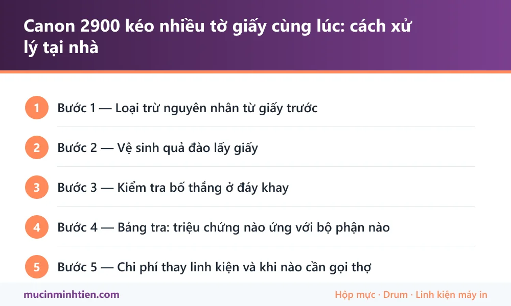

Canon 2900 kéo nhiều tờ giấy cùng lúc: cách xử lý tại nhà

Canon LBP 2900 kéo nhiều tờ giấy cùng lúc gần như luôn xuất phát từ hai bộ phận: quả đào lấy giấy đã chai và bố thắng ở đáy khay bị mòn. Trước khi thay linh kiện, hãy loại trừ giấy ẩm và cách xếp giấy — hai nguyên nhân miễn phí chiếm khoảng một phần ba số ca.
Bước 1 — Loại trừ nguyên nhân từ giấy trước
Đừng vội mở máy. Ba kiểm tra dưới đây mất chưa tới 5 phút và giải quyết được kha khá trường hợp:
- Đảo tơi xấp giấy. Cầm xấp giấy, bẻ cong nhẹ rồi thả cho các tờ tách rời nhau, làm cả hai chiều. Giấy mới lấy ra khỏi ram thường dính nhau do lực ép khi đóng gói.
- Kiểm tra độ ẩm. Giấy để ngoài không khí ẩm vài ngày sẽ hút nước và dính thành từng cặp. Thử bằng ram giấy mới mở — nếu hết hiện tượng, vấn đề là bảo quản giấy chứ không phải máy.
- Giảm lượng giấy trong khay. Đổ đầy khay làm tăng lực đè lên quả đào và dễ kéo dính. Thử để khoảng nửa khay.
Nếu sau ba bước này máy vẫn nuốt nhiều tờ, vấn đề nằm ở phần cơ. Đi tiếp.
Bước 2 — Vệ sinh quả đào lấy giấy
Quả đào (pickup roller) là bánh cao su bán nguyệt nằm phía trên khay giấy, có nhiệm vụ tì xuống và kéo tờ trên cùng vào máy. Bụi giấy bám lâu ngày tạo một lớp trơn khiến nó trượt, và khi trượt nó không tách được tờ trên khỏi tờ dưới.
- Tắt máy, rút điện, rút hết giấy khỏi khay.
- Mở nắp trước, lấy hộp mực 12A ra và để nơi tối, tránh ánh sáng trực tiếp chiếu vào drum.
- Nhìn vào phía trên khay giấy, tìm bánh cao su màu xám hoặc đen hình bán nguyệt.
- Thấm cồn 70 độ vào khăn mềm hoặc bông gòn, lau kỹ toàn bộ bề mặt cao su. Xoay quả đào để lau hết vòng.
- Đợi khô hoàn toàn khoảng 5 phút rồi lắp lại hộp mực, cho giấy vào và in thử 10 trang liên tục.
Tuyệt đối không dùng xăng, dầu hỏa hay dung môi mạnh — chúng làm cao su nở và chai nhanh hơn. Cũng không dùng giấy nhám để đánh sần bề mặt: mẹo này lan truyền nhiều trên mạng nhưng chỉ kéo dài được vài ngày rồi khiến quả đào hỏng hẳn.
Bước 3 — Kiểm tra bố thắng ở đáy khay
Bố thắng (separation pad) là miếng cao su hoặc nỉ nhỏ đặt ở đáy khay, ngay chỗ giấy đi vào. Nhiệm vụ của nó là tạo ma sát giữ lại các tờ phía dưới trong khi quả đào chỉ kéo tờ trên cùng đi. Bố mòn thì hai bộ phận mất cân bằng lực và giấy đi lên thành cặp.
Cách kiểm tra: nhìn miếng cao su nhỏ ở đáy khay. Bố còn tốt có bề mặt nhám, hơi ráp khi miết tay. Bố đã mòn thì bóng, phẳng lì, đôi khi lõm hẳn thành rãnh ở chính giữa do giấy chà qua hàng chục nghìn lần.
Bố thắng có thể vệ sinh bằng cồn giống quả đào, nhưng khi đã lõm rãnh thì bắt buộc phải thay. Đây là linh kiện rẻ và thay nhanh, thường chỉ mất vài phút.
Bước 4 — Bảng tra: triệu chứng nào ứng với bộ phận nào
| Biểu hiện | Nguyên nhân nhiều khả năng | Cách xử lý |
|---|---|---|
| Kéo 2–3 tờ, thỉnh thoảng mới bị | Giấy ẩm hoặc dính do đóng gói | Đảo tơi giấy, đổi ram mới |
| Kéo nhiều tờ đều đặn, giấy nào cũng vậy | Bố thắng mòn | Vệ sinh, mòn sâu thì thay |
| Có lúc không kéo được tờ nào, có lúc kéo cả xấp | Quả đào chai, trượt | Lau cồn, chai cứng thì thay |
| Kéo được nhưng giấy vào lệch, nhăn | Con lăn dẫn giấy hoặc bánh răng mòn | Cần kỹ thuật viên kiểm tra |
| Kéo nhiều tờ kèm tiếng rít, kêu to | Bánh răng thiếu mỡ hoặc mẻ răng | Cần tháo máy bảo dưỡng |
Bước 5 — Chi phí thay linh kiện và khi nào cần gọi thợ
Linh kiện cơ khí cho Canon LBP 2900 thuộc nhóm rẻ nhất trong các dòng máy in laser văn phòng. Quả đào, bố thắng, bạc phíp và lò xo kéo đều nằm trong khoảng vài chục nghìn đồng. Tra chính xác mã dùng cho máy của bạn bằng công cụ tra hộp mực và linh kiện theo model, hoặc xem bảng giá đầy đủ.
Nên gọi kỹ thuật viên khi: máy đã kẹt giấy tới mức phải mở nắp sau để gỡ, giấy ra bị nhăn rõ, máy phát ra tiếng lạo xạo khi kéo giấy, hoặc bạn không muốn tháo khay và cụm kéo giấy. Chi phí xử lý tận nơi theo bảng giá dịch vụ từ 150.000đ cho hạng mục kẹt giấy, đã gồm vệ sinh toàn bộ đường dẫn giấy.
Phòng tránh tái phát
- Bảo quản giấy trong bao kín, không để trực tiếp trên sàn hay cạnh cửa sổ.
- Dùng giấy 70–80 gsm, tránh giấy quá mỏng hoặc giấy đã bị cong mép.
- Lau quả đào mỗi 3–6 tháng nếu máy in nhiều, coi như bảo dưỡng định kỳ.
- Không nhét giấy quá vạch giới hạn trong khay.
- Vệ sinh khoang hộp mực khi thay mực — bụi mực rơi xuống đường giấy cũng làm quả đào trơn nhanh hơn.
Nếu máy Canon 2900 của bạn còn gặp lỗi khác kèm theo, xem thêm Canon 2900 không nhận hộp mực: 5 cách xử lý tại chỗ.

Câu hỏi thường gặp
Vì sao Canon 2900 kéo 2-3 tờ giấy cùng lúc?
Vệ sinh quả đào bằng cồn có hết không?
Thay quả đào và bố thắng cho Canon 2900 hết bao nhiêu tiền?
Có nên tiếp tục in khi máy hay kéo nhiều tờ không?
Giấy loại nào hợp với Canon 2900 nhất?
Bài viết liên quan
- Canon 2900 không nhận hộp mực: 5 cách xử lý tại chỗ
- Canon 2900 chạy liên tục không dừng: 6 nguyên nhân và cách sửa
- Máy in không kéo giấy: 6 nguyên nhân và cách khắc phục
- Máy in không in được, báo Offline: 7 bước khắc phục
- Hộp scan, hộp quang Canon LBP 2900
- Tra hộp mực và linh kiện theo model máy in
- HP 107a in mờ, nhạt chữ: 6 nguyên nhân và cách xử lý
- Dịch vụ sửa máy in tận nơi TP.HCM